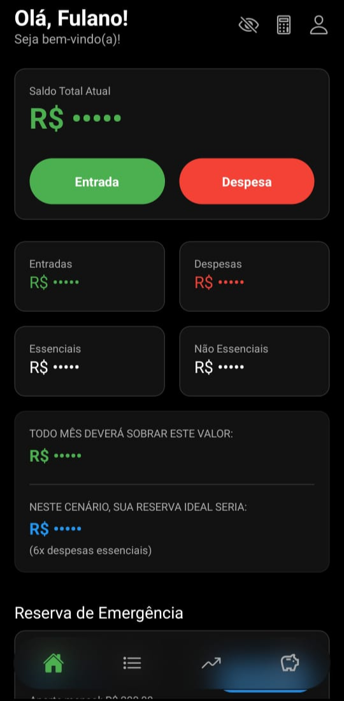
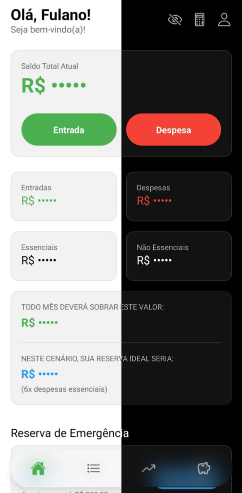

INTELIGÊNCIA FINANCEIRA DOMÉSTICA
O My Finance Control simplifica sua vida financeira com interfaces intuitivas e relatórios precisos. Menos planilhas, mais liberdade.

Um ecossistema completo para gerir seu patrimônio e futuro.
Painel inteligente para um resumo rápido da sua saúde financeira:
Ferramenta integrada para cálculos rápidos sem sair do aplicativo:
Registre e controle cada movimentação com precisão:
Personalize a classificação completa dos seus gastos:
O fundo de segurança para imprevistos, integrado ao seu custo de vida:
Economize para objetivos específicos como viagens ou grandes compras:
Organize seus documentos e comprovantes de forma digital e segura:
Gerencie sua carteira de ativos de forma simples e centralizada:
Simule o poder multiplicador do tempo nos seus investimentos:
Organize seus objetivos financeiros com um sistema visual e hierárquico:
Mantenha seus dados seguros e seu acesso facilitado:
Recursos avançados para proteger seus dados de olhares curiosos:
Seus dados pertencem a você. Use o backup local para segurança total:
Escolha o visual que mais lhe agrada:
A alteração de tema é instantânea e aplicada em todo o aplicativo.

Por segurança, o app não armazena sua senha na nuvem. Se você esquecer, terá que reinstalar o app e importar um backup anterior.
Não. O My Finance Control funciona 100% offline. Somente você tem acesso aos seus dados financeiros.
Não. Eles são saldos independentes gerenciados separadamente para facilitar sua organização.
Registre despesas no momento em que elas ocorrem para manter precisão total.
Faça um backup semanal para garantir a integridade dos seus dados contra imprevistos.
No final do mês, veja suas estatísticas de despesas não-essenciais para planejar cortes.